The Memory Processing Unit: A Generalized Interface for End-to-End In-Memory Execution 论文解析¶
📄 下载论文原文 (PDF) | 🔗 在线阅读 | DOI: 10.1109/hpca68181.2026.11408599
0. 论文基本信息¶
作者 (Authors): Minh S. Q. Truong, Yiqiu Sun, Dawei Xiong, et al.
发表期刊/会议 (Journal/Conference): MICRO
发表年份 (Publication Year): 2021
研究机构 (Affiliations): University of Illinois Urbana-Champaign, Carnegie Mellon University
1. 摘要¶
目的
- 解决现有 Processing-using-memory (PUM) 架构的三大核心瓶颈：
- 过度依赖 host CPU 执行控制流和标量操作，导致性能严重下降（文中估算慢 30–40×）。
- 缺乏统一、可扩展的编程接口，迫使程序员深度耦合特定微架构，阻碍了通用软件栈（如编译器、系统库）的发展。
- 难以将应用从简单的数据并行内核扩展到复杂的 end-to-end applications。
方法
- 提出 Memory Processing Unit (MPU)，一个与微架构无关的 PUM 前端接口层，包含三个核心组件：
- MPU 指令集架构 (ISA)：提供一套通用指令，支持复杂控制流（如
if-else、动态循环、子程序调用）和任务协调，取代了各 PUM 设计私有的指令集。 - Ensemble Execution Model：一种新的执行模型，允许程序员动态地将任意位置的 Vector Register Files (VRFs) 组合成 ensemble 来执行相同任务，从而灵活表达不同粒度的并行性。
- Register File Holder (RFH) 抽象：封装底层硬件约束（如热密度限制、共享控制单元），由 MPU runtime 自动管理调度，对程序员透明。
- 设计并实现了完整的 MPU control path 硬件，包括 precoder、compute controller (CC) 和 data transfer controller (DTC)，以高效执行 MPU ISA。
- 引入 recipe table 机制，将通用 MPU 指令动态翻译为后端 PUM 微架构特定的 micro-ops。
- 通过 in-VRF masking 硬件支持高效的 SIMD predication，实现数据驱动的复杂控制流。
- 开发了高级汇编器 ezpim，简化了 MPU 程序的编写。
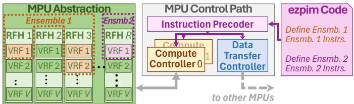
Fig. 2. MPU overview. A VRF corresponds to one or more memory arrays.结果
- 性能与能效提升：在 RACER、MIMDRAM 和 Duality Cache 三种不同的 PUM 微架构上，MPU 相比其原始设计（Baseline）取得了显著改进。
- 平均性能提升 1.79×，平均能效提升 3.23×。
- 对于包含复杂控制流的内核，提升更为显著（例如 RACER 性能提升 5.6×，能效提升 11.3×）。
| 配置 | 平均性能提升 (vs. Baseline) | 平均能效提升 (vs. Baseline) |
|---|---|---|
| MPU:RACER | 1.79× | 3.23× |
| MPU:MIMDRAM | 1.70× | 2.34× |
| MPU:DualityCache | 1.12× | 4.07× |
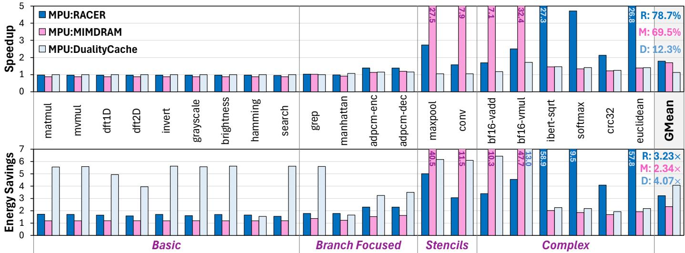
- 对比现代 GPU：MPU 在数据密集型任务上展现出巨大优势。
- MPU:RACER 相比 NVIDIA GeForce RTX 4090 GPU，平均性能提升 67×，平均能效提升 47×。
- MPU:MIMDRAM 平均性能提升 156×，平均能效提升 35×。
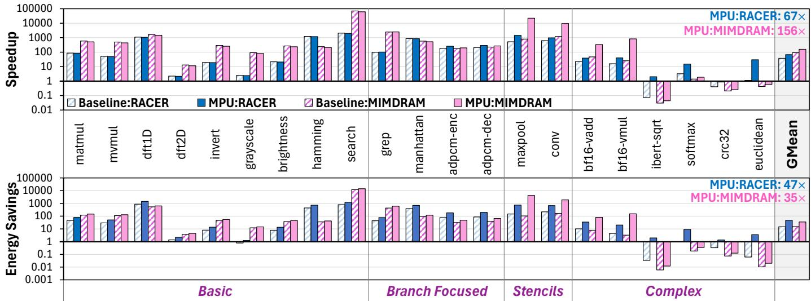
- 端到端应用执行：成功在 PUM 上完整执行了 LLMEncode、BlackScholes 和 EditDistance 三个复杂应用，无需 CPU 干预。
- 例如，MPU:RACER 执行 EditDistance 的速度是 GPU 的 400×。
- 彻底消除了 Baseline 方案中因频繁 off-chip communication 导致的巨大开销。
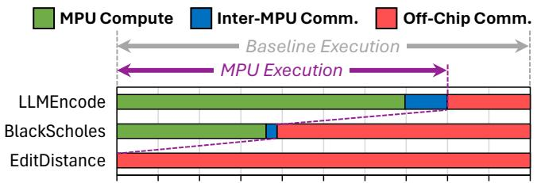
结论
- MPU 成功地为通用 bitwise PUM 架构提供了一个 microarchitecture-agnostic 的标准化接口。
- 通过其创新的 ensemble/RFH 抽象和配套的控制路径硬件，MPU 实现了 CPU-free 的 end-to-end application execution，解决了长期制约 PUM 发展的编程性和通用性难题。
- 实验结果证明，MPU 不仅大幅提升了现有 PUM 设计的性能和能效，还为其生态系统的建立（如通用编译器和软件工具链）奠定了坚实基础，使 PUM 技术有望从专用加速器走向更广泛的通用计算领域。
2. 背景知识与核心贡献¶
研究背景 - Processing-using-memory (PUM)，或称 in-memory computing，旨在通过利用存储单元间的电气交互直接执行计算，从而消除数据在处理器与内存间移动所带来的巨大能耗和延迟开销。 - 尽管潜力巨大，现有 PUM 研究主要聚焦于设计特定的 datapath 微架构来加速高度并行的计算内核（如矩阵乘法），但这些方案存在严重局限： - 依赖于微架构特有的、类似向量的接口，导致应用中大量非并行或控制流密集的操作必须卸载到外部 CPU 执行。 - 程序员需要深入了解底层硬件细节才能将应用扩展到整个内存芯片，编程负担极重。 - 由于缺乏统一、通用的接口，阻碍了为 PUM 开发通用的系统软件栈（如编译器、运行时库）。
研究动机
- 现有 PUM 方案对 CPU 的强依赖性是其无法处理端到端复杂应用的根本瓶颈。即使仅有少量指令（如文中图1所示，每80条指令中有1条）需要 CPU 参与，也会导致程序整体性能下降 10.1倍，对于典型程序，预估 slowdown 高达 30–40倍。
-  - 因此，亟需一个微架构无关的通用接口层，既能支持端到端的应用执行，又能简化编程模型，并为跨平台的 PUM 软件生态奠定基础。
- 因此，亟需一个微架构无关的通用接口层，既能支持端到端的应用执行，又能简化编程模型，并为跨平台的 PUM 软件生态奠定基础。
核心贡献 - 提出 Memory Processing Unit (MPU)，一个面向通用 PUM 的、微架构无关的前端接口层，包含三个核心组件： - MPU 指令集架构 (ISA)：提供一套通用指令，支持应用扩展和任务协调，屏蔽底层硬件差异。 - Ensemble Execution Model：一种新的执行模型，允许程序员动态地将多个 Vector Register Files (VRFs) 组合成一个逻辑执行单元（ensemble），该模型能映射到大多数通用 PUM 微架构。 - MPU Control Path：一个全面的控制路径硬件设计，能够高效地跨多个 ensembles 执行 MPU ISA 二进制文件，并支持脱离 CPU 的复杂端到端应用执行。 - 通过实验证明，MPU 能够成功映射到多种先前提出的 PUM datapaths（如 DRAM-based MIMDRAM, ReRAM-based RACER, SRAM-based Duality Cache），并在 21个 数据密集型内核上，相比这些原始设计，平均实现 1.79倍 的性能提升和 3.23倍 的能效提升（相较于现代 GPU，提升高达 67倍/47倍）。
3. 核心技术和实现细节¶
0. 技术架构概览¶
整体技术架构
本文提出了一种名为 Memory Processing Unit (MPU) 的通用接口层，旨在解决现有 Processing-Using-Memory (PUM) 架构在编程模型、应用扩展性和系统软件支持方面的根本性限制。其核心目标是实现 microarchitecture-agnostic（微架构无关）的端到端应用执行。
- 设计动机：传统 PUM 方案依赖于特定于微架构的向量接口，导致三个主要问题：
- 大量操作必须卸载到 CPU，造成严重的性能瓶颈。
- 程序员需手动处理芯片级扩展，负担沉重。
- 难以开发通用的系统软件和编程工具链。
- 核心理念：MPU 在底层 PUM 数据通路之上引入一个轻量级的、硬件感知的运行时和控制路径，将复杂的硬件约束与程序员隔离开来，提供一个统一、高级的编程抽象。
MPU 的三大核心组件
1. MPU 指令集架构 (ISA)
- 定义了一套通用指令集，取代了各 PUM 微架构特有的指令。
- 包含三类关键指令：
- Ensemble Deployment: COMPUTE, MOVE 等，用于声明计算或数据传输任务的范围。
- Control Flow: JUMP_COND, SETMASK, UNMASK 等，支持 data-driven control flow（数据驱动的控制流），如动态循环和条件分支。
- Arithmetic & Data Movement: 标准的算术、逻辑和数据移动指令。
- 该 ISA 被设计为可由一个通用的硬件解码器翻译成不同后端 PUM 技术（如 DRAM, ReRAM, SRAM）所需的底层 micro-ops。
2. Ensemble Execution Model (集成执行模型) - 这是 MPU 编程的核心抽象。 - Ensemble (集成): 一个由程序员定义的、执行相同内核代码的 Vector Register Files (VRFs) 集合。VRFs 是对底层物理内存阵列的逻辑映射。 - Register File Holder (RFH, 寄存器文件持有者): 一个封装了硬件物理约束（如热密度限制、共享控制单元）的抽象。一个 RFH 包含一组不能同时激活的 VRFs。 - 运行时调度: MPU 运行时负责将程序员定义的、逻辑上无约束的 Ensemble 映射到物理硬件上，并通过调度算法确保不违反任何 RFH 约束，从而实现了 hardware-agnostic programming。
Fig. 2. MPU overview. A VRF corresponds to one or more memory arrays.
3. MPU 控制路径 (Control Path) - 这是实现上述抽象的硬件基础，负责高效执行 MPU ISA 二进制文件。 - 主要包含以下硬件模块： - Precoder: 存储程序二进制并分发指令。 - Compute Controller (CC): 管理计算 Ensemble 的执行状态。其核心是一个 recipe table，用于将通用 MPU 指令高效地解码为后端特定的 micro-op 序列。 - Data Transfer Controller (DTC): 处理 VRF 之间的数据移动和 inter-MPU communication（MPU 间通信）。 - 关键技术: - SIMD Gating / Lane Masking: 通过在每个 VRF 中添加 mask register，实现了细粒度的 per-lane predication（每通道断言），这是支持复杂控制流（如动态循环）的硬件基础。 - Thermal-aware Scheduling: 调度器根据 RFH 的热约束动态激活 VRFs，确保芯片安全运行。
 Fig. 8. MPU control path hardware for an abstracted datapath.
Fig. 8. MPU control path hardware for an abstracted datapath.
与现有 PUM 数据通路的集成
MPU 的设计具有高度通用性，论文展示了其如何映射到三种截然不同的 PUM 微架构上：
| PUM Datapath | Underlying Tech | VRF Mapping | RFH Mapping | Constraint Encapsulated |
|---|---|---|---|---|
| RACER | ReRAM | One pipeline (spanning multiple tiles) | One cluster (64 pipelines) | Thermal dissipation limits |
| MIMDRAM | DRAM | One DRAM mat | One µPE (controls a group of mats) | Thermal dissipation limits |
| Duality Cache | SRAM | One SRAM subarray | One issue window | Shared instruction controller |
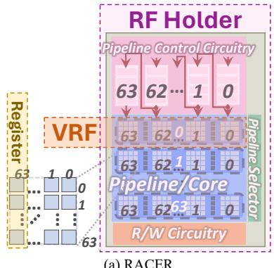
(a) RACER编程与软件栈
- ezpim: 一个高级汇编器，允许程序员使用类似高级语言的语法（如
for/while循环,if/else分支）编写代码，并自动将其转换为底层的 MPU ISA 指令序列，极大地简化了编程。 - 端到端执行: 通过集成的控制路径和 ISA，MPU 能够在无需主机 CPU 干预的情况下，独立执行包含复杂控制流的完整应用程序。
 Fig. 7. ezpim code (left) and MPU ISA output (right) for (a) for/while loops, (b) branches, (c) nested branches; (d) MPU complex control support.
Fig. 7. ezpim code (left) and MPU ISA output (right) for (a) for/while loops, (b) branches, (c) nested branches; (d) MPU complex control support.
1. Memory Processing Unit (MPU) ISA¶
MPU ISA的核心设计目标与作用
- MPU ISA是一套微架构无关的指令集，旨在为各种基于位级操作的PUM（Processing-using-memory）后端提供一个统一的编程接口。
- 其核心作用是支持端到端应用执行，通过在内存内部处理复杂的控制流和任务协调，消除对主机CPU的依赖，从而避免高昂的数据移动开销。
- 该ISA将程序员从底层硬件细节（如特定内存技术的微操作、物理阵列布局、热约束等）中解放出来，提供了一个更高级、更易编程的抽象。
MPU ISA的关键指令类别与实现原理
MPU ISA的设计围绕三大核心挑战：任务并行与协调、动态数据驱动的控制流以及高效的数据移动。其指令集也相应地分为几大类。
-
任务协调与执行模型指令
- MPU引入了ensemble execution model（集成执行模型），这是其编程抽象的核心。
COMPUTE <rfhID> <vrfID>：此指令用于实例化一个compute ensemble。它告诉MPU运行时，指定的VRF（Vector Register File，映射到物理内存阵列）应被包含在当前的任务组中，并由指定的RFH（Register File Holder，封装了硬件约束如热限制）进行管理。COMPUTE_DONE：标记一个compute ensemble的结束。MPU_SYNC：作为一个fence指令，用于同步所有已部署的compute ensembles，确保它们在继续执行后续代码前都已完成。这对于管理共享内存语义下的并发任务至关重要。- 这些指令共同构建了一个轻量级的任务并行模型，允许程序员动态地将任意数量的VRF分组以执行相同的操作，而无需关心它们的物理位置或硬件约束。
-
动态控制流指令（核心创新）
- 为了支持
if-else、动态循环等复杂控制流，MPU ISA结合了硬件辅助的lane masking（通道掩码）机制。 - 实现原理：MPU控制路径为每个VRF维护一个mask register（掩码寄存器）。该寄存器的每一位对应一个vector lane（向量通道/内存单元）。通过控制施加到内存阵列上的电压，可以按位启用或禁用计算，从而实现predicated execution（谓词执行）。
SETMASK <rs>：将源寄存器rs（通常是从比较指令结果填充的）的内容复制到当前VRF的mask register中，从而启动谓词执行。只有掩码位为1的lane才会参与后续的计算。GETMASK <rd>：将当前mask register的内容读取到通用数据寄存器rd中。这使得程序员可以在软件中修改掩码，以支持任意深度的嵌套分支。UNMASK：通过将所有掩码位设为1来禁用谓词执行，恢复所有lane的活动状态。JUMP_COND <lineNum>：这是实现动态循环的关键指令。它会检查当前mask register。如果所有位都为0（意味着所有lane都已满足退出条件），则顺序执行下一条指令；否则，跳转到指定的lineNum继续循环。MPU控制路径中的EFI (Evaluation Fetching Infrastructure) 硬件负责高效地执行此检查。JUMP <lineNum>和RETURN：用于支持子程序调用，通过硬件维护的返回地址栈来实现。
- 为了支持
-
数据移动与通信指令
MEMCPY <vrfSRC> <rs>, <vrfDES> <rd>：在不同VRF之间复制向量寄存器的内容。此指令只能在transfer ensemble（传输集成）的上下文中使用。MOVE <rfhSRC> <rfhDES>和MOVE_DONE：用于界定一个transfer ensemble的开始和结束。MOVE指令设置源和目标RFH对，为后续的MEMCPY操作建立上下文。SEND <mpuDES>,SEND_DONE,RECV <mpuSRC>：构成一个显式的message-passing interface（消息传递接口），用于在多个MPU芯片之间进行可扩展的通信，并保证死锁避免。
MPU ISA在整体架构中的输入输出关系
- 输入：程序员编写的MPU ISA二进制程序（或通过
ezpim等高级汇编器生成的程序）。 - 处理：MPU的控制路径硬件（包括Precoder, Compute Controller, Data Transfer Controller）负责解释和执行这些指令。
- Precoder从片上指令存储单元（ISU）中取出指令，并根据指令类型（compute/transfer）将其分发给相应的控制器。
- Compute Controller负责管理compute ensemble的生命周期，利用recipe table将通用的MPU ISA指令（如
ADD,MUL）动态翻译成后端PUM微架构特定的微操作序列（micro-ops）。 - Data Transfer Controller则串行化地执行transfer ensemble，确保内存一致性。
- 输出：在PUM内存阵列上直接完成计算和数据移动，最终结果存储在指定的VRF中，整个过程无需与外部CPU交互。
Fig. 7. ezpim code (left) and MPU ISA output (right) for (a) for/while loops, (b) branches, (c) nested branches; (d) MPU complex control support.
MPU ISA指令集概览（部分关键指令）
| 指令类别 | 指令 | 描述 |
|---|---|---|
| Ensemble部署 | COMPUTE <rfhID> <vrfID> |
标记compute ensemble的开始，激活指定VRF |
COMPUTE_DONE |
标记compute ensemble的结束 | |
MOVE <rfhSRC> <rfhDES> |
标记transfer ensemble的开始，设置源/目标RFH | |
MOVE_DONE |
标记transfer ensemble的结束 | |
| 控制流 | SETMASK <rs> |
将rs复制到mask register，启动谓词执行 |
GETMASK <rd> |
将mask register内容读入rd | |
UNMASK |
停止谓词执行，启用所有lane | |
JUMP_COND <lineNum> |
若mask非全0，则跳转（用于动态循环） | |
JUMP <lineNum> |
无条件跳转（用于子程序调用） | |
RETURN |
从子程序返回 | |
| 数据移动 | MEMCPY ... |
在VRF间复制数据（仅在transfer ensemble内） |
SEND/RECV ... |
MPU间消息传递 |
2. Ensemble Execution Model¶
Ensemble Execution Model 的核心设计与实现原理
- 基本定义：Ensemble（集合）是程序员定义的一个逻辑单元，用于将一组物理上可能不连续的 Vector Register Files (VRFs) 组合在一起，以执行相同的指令序列。这为程序员提供了一个抽象层，使其无需关心底层硬件的具体物理布局和约束。
- 核心目标：
- 允许程序员表达任意程度的并行性，从高度并行的向量操作到单个标量操作（通过只包含一个 VRF 的 ensemble 实现）。
- 将硬件约束管理（如热密度限制、共享控制单元等）从程序员手中剥离，交由 MPU 运行时系统自动处理。
- 提供一个微架构无关的编程接口，使得为一种 PUM 后端编写的程序可以轻松移植到另一种后端。
Ensemble 的类型与编程接口
- Compute Ensemble：用于执行计算密集型任务。
- Header：通过一条或多条
COMPUTE <rfhID> <vrfID>指令声明，指定参与该 ensemble 的所有 VRF。 - Body：包含一系列算术、逻辑或控制流指令（如
ADD,MUL,JUMP_COND），这些指令将被应用于 ensemble 中的所有 VRF。 - Footer：以
COMPUTE_DONE指令结束，标志着该 ensemble 执行完毕。 - Transfer Ensemble：用于在不同 VRF 或不同 MPU 之间进行数据移动和同步。
- Header：通过
MOVE <rfhSRC> <rfhDES>指令设置源和目标 RFH 对。 - Body：使用
MEMCPY指令在指定的 VRF 对之间复制数据。 - Footer：以
MOVE_DONE指令结束。 - 运行时语义：与 GPU 的 SIMT 模型不同，ensemble 中的 VRF 不要求并发执行。MPU 的调度器会根据硬件约束（通过 RFH 抽象）动态决定哪些 VRF 可以同时激活，从而提供了更大的调度灵活性。
硬件抽象层：VRF 与 RFH
- Vector Register File (VRF)：这是对底层物理内存阵列（如 DRAM mat, ReRAM tile）的直接映射。一个 VRF 代表一个可以独立执行向量操作的单元。
- Register File Holder (RFH)：这是一个关键的硬件约束抽象。一个 RFH 包含一组受共同物理限制的 VRF。
- 约束类型：
- 热密度限制：例如，在 RACER 中，一个 cluster 内的 64 个 pipeline (VRF) 不能全部同时激活，因此整个 cluster 被映射为一个 RFH。
- 资源共享限制：例如，在 Duality Cache 中，一组 SRAM subarrays (VRFs) 共享同一个指令控制器（loop FSM），因此它们被映射为一个 RFH。
- 映射示例：
(a) RACER
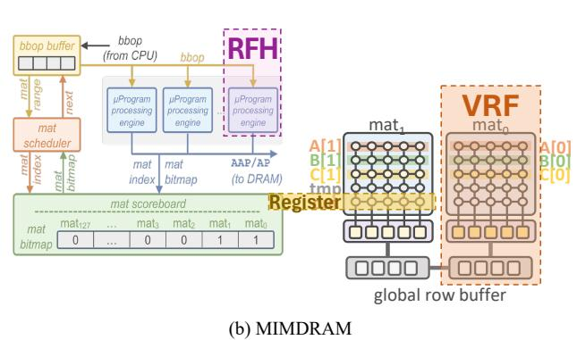
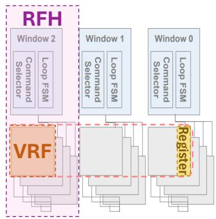
调度算法与运行时管理
- 调度目标：在遵守每个 RFH 的激活限制（例如，每个 RFH 同时只能激活 1 个 VRF）的前提下，最大化硬件利用率。
- 调度流程（基于图10的算法）：
- 当一个 ensemble 被提交时，调度器会尝试激活其所有 VRF。
- 如果某个 RFH 的激活上限已达到，剩余的 VRF 会被放入该 RFH 的待机队列 (standby queue)。
- 当前激活的 VRF 完成执行后，调度器会收到硬件中断，并从待机队列中取出 VRF 进行下一轮激活，直到 ensemble 中所有 VRF 都执行完毕。
- 热感知调度：调度器利用供应商提供的功耗模型，动态调整激活的 VRF 数量，确保芯片总功耗在安全范围内。
在整体 MPU 架构中的作用
- 承上启下：Ensemble 模型是连接高级编程抽象（如 ezpim）和底层 PUM 微架构的桥梁。
- 向上：它为程序员和编译器提供了一个简单、灵活且可扩展的并行编程模型。
- 向下：它通过 RFH 抽象，将多样化的硬件约束统一化，使得 MPU 控制路径（如 Compute Controller）可以用一套通用逻辑来管理所有后端。
- 赋能复杂控制流：通过与 per-lane masking（通过
SETMASK/UNMASK指令控制）结合，ensemble 模型能够高效地支持数据驱动的动态循环和分支，这是实现 CPU-free end-to-end execution 的关键。 Fig. 7. ezpim code (left) and MPU ISA output (right) for (a) for/while loops, (b) branches, (c) nested branches; (d) MPU complex control support. - 简化软件栈开发：由于二进制文件不再硬编码硬件细节（如 VRF 的物理位置），这为开发可移植的编译器、调试器和性能分析工具奠定了基础。
3. Register File Holder (RFH) Abstraction¶
Register File Holder (RFH) Abstraction 的核心设计原理
- RFH 的根本目的是作为一个硬件约束的通用封装层，将底层 PUM 微架构中复杂的物理限制（如热密度、共享控制逻辑）对程序员和编译器隐藏起来。
- 它建立在Vector Register File (VRF) 之上。一个 VRF 通常直接映射到一个或多个物理内存阵列（mat/subarray/tile），代表了可被编程模型直接寻址的基本计算单元。
- 一个 RFH 则包含一组在物理上紧密耦合、无法完全并行激活的 VRF。这种耦合源于具体的硬件实现约束。
RFH 所封装的关键硬件约束类型
- 热密度限制 (Thermal Dissipation Limits)：
- 在高密度内存阵列（如 ReRAM, DRAM）中，并行激活过多的 VRF 会导致局部功耗密度过高，超出安全散热阈值。
- RFH 将受同一热域限制的 VRF 分组，确保运行时调度器不会同时激活超过安全数量的 VRF。
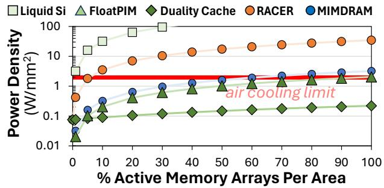
- 共享硬件资源限制 (Shared Hardware Resource Limits)：
- 某些微架构中，邻近的 VRF 可能共享关键的控制单元，例如指令控制器、解码器或互连网络端口。
- 例如，在 Duality Cache 中，一组 SRAM 子阵列共享一个issue window 和其内部的loop FSM，导致它们无法执行不同的指令流。
- RFH 将共享同一套控制硬件的 VRF 分组，确保调度器在同一时刻只为该 RFH 分配一个统一的指令流。
RFH 在不同 PUM 微架构中的具体映射实例
(a) RACER
- RACER (ReRAM-based)：
- VRF 映射：每个 pipeline（由多个按位条带化的 tile 组成）映射为一个 VRF。
- RFH 映射：一个 cluster（包含 64 个 pipeline/VRF，并共享一个 Pipeline Control Circuitry (PCC)）映射为一个 RFH。这同时满足了热限制和共享 PCC 的约束。
- MIMDRAM (DRAM-based)：
- VRF 映射：单个 DRAM mat 映射为一个 VRF。
- RFH 映射：每个 µPE (micro-Program processing engine) 控制的一组物理邻近的 mats/VRFs 映射为一个 RFH，以遵守热限制。
- Duality Cache (SRAM-based)：
- VRF 映射：单个 SRAM subarray 映射为一个 VRF。
- RFH 映射：每个 issue window 及其直接连接的 SRAM subarrays/VRFs 映射为一个 RFH，因为这些 subarrays 共享同一个指令分发和循环控制 FSM。
RFH 的运行时调度算法与作用
- 输入：程序员定义的 ensemble（一个逻辑上要执行相同操作的 VRF 集合，其成员可以来自任意物理位置）。
- 处理流程：
- MPU 运行时接收到 ensemble 后，会将其包含的 VRF 按所属的 RFH 进行分组。
- 调度器（如图 Fig. 8. MPU control path hardware for an abstracted datapath. 中所示）维护一个 per-RFH 的激活队列和等待队列。
- 对于每个 RFH，调度器根据预设的硬件约束（例如，
Active VRFs Per RFH参数，在 RACER 中为 1，在 MIMDRAM/Duality Cache 中为 256，见下表）来决定可以同时激活多少个 VRF。 - 如果 ensemble 请求激活的 VRF 数量超过了 RFH 的约束上限，多余的 VRF 会被放入standby queue（等待队列）。
- 当前批次激活的 VRF 执行完成后，调度器会从等待队列中取出下一批 VRF 进行激活，直到整个 ensemble 的所有 VRF 都执行完毕。
- 输出：对底层硬件发出符合物理约束的、分批次的 VRF 激活指令序列，保证了程序的正确性和硬件的安全性。
系统参数中的 RFH 配置
| 参数 | RACER | MIMDRAM | Duality Cache | 说明 |
|---|---|---|---|---|
| Active VRFs Per RFH | 1 | 256 | 256 | 由热或互连约束决定的最大并发 VRF 数 |
| RFHs Per MPU | 8 | 8 | 8 | 由互连网络拓扑决定 |
| MPUs on Chip | 497 | 450 | 12 | 受芯片总面积和 MPU 前端面积限制 |
RFH 抽象在整体 MPU 架构中的关键作用
- 解耦编程模型与硬件细节：程序员只需关注逻辑上的 ensemble 并行性，无需了解 VRF 的物理布局和激活限制，极大地简化了编程。
- 保障硬件安全：通过运行时强制执行 RFH 约束，自动防止了因过度并行激活而导致的热失控风险。
- 实现跨平台二进制可移植性：MPU 二进制文件不包含具体的硬件约束信息。当在不同微架构上运行时，只需加载对应的 RFH/VRF 映射配置，运行时即可自动适配，这是构建通用 PUM 软件栈的基础。
4. MPU Control Path Hardware¶
MPU控制路径硬件架构
MPU控制路径硬件是实现其微架构无关接口的核心，负责高效执行MPU ISA二进制文件。其设计围绕三个关键组件展开：预解码器（Precoder）、计算控制器（Compute Controller, CC）和数据传输控制器（Data Transfer Controller, DTC），共同协作以管理程序状态、调度执行并处理数据移动。
Fig. 8. MPU control path hardware for an abstracted datapath.
预解码器 (Precoder)
- 核心功能：作为指令分发的前端，负责从片上存储中获取指令并将其路由到正确的控制单元。
- 关键组件：
- 指令存储单元 (ISU)：用于在芯片上存储完整的MPU程序二进制文件。其具体实现技术（如SRAM或与PUM相同的技术）由硬件设计者根据平台需求决定。
- 取指单元 (Fetcher)：使用程序计数器（PC）从ISU中检索下一条或多条指令。它利用ensemble头尾的元数据来确定应将指令体分发给哪个控制单元（CC或DTC）。
- 作用：解耦了指令获取与具体执行逻辑，为后续的并行任务调度奠定了基础。
计算控制器 (Compute Controller, CC)
计算控制器是执行compute ensemble的核心，其内部包含多个协同工作的子模块。
- 激活板 (Activation Board)：
- 包含一个针对MPU中每个VRF的使能位掩码。
- 在ensemble启动时，CC根据元数据启用特定的VRF，确保只有目标硬件单元被激活。
- 回放缓冲区 (Playback Buffer)：
- 存储从预解码器接收到的计算指令序列。
- 关键作用：支持指令序列的重放，这对于两种场景至关重要：(1) 当硬件约束（如热限制）阻止所有VRF同时并发执行时；(2) 在执行包含动态循环的指令时，需要反复迭代。
- 指令到微操作解码器 (I2M)：
- 通用性设计：这是一个universal I2M，能够将MPU ISA中的通用指令翻译成后端特定PUM微架构所需的底层微操作（micro-ops）。
- 基于配方表 (Recipe Table) 的优化：
- 配方表是一个并行查找表，存储了每条计算指令对应的微操作序列模板（recipes）。这些模板包含微操作但不包含具体的寄存器地址。
- 模板填充器 (Template Filler)：在运行时，根据当前激活的VRF信息，将具体的VRF地址填入模板，生成完整的、可执行的微操作序列。
- 容量优化机制（见图9）：
- 指针表 (Pointer Table)：允许多个recipe共享公共的子序列，减少冗余存储。
- 模板查找表 (Template Lookup Table)：作为二级缓存，动态地将常用recipe从二进制存储加载到容量有限的主配方表中。
- 跨CC共享：多个CC可以共享同一个配方表硬件，以节省面积和功耗。
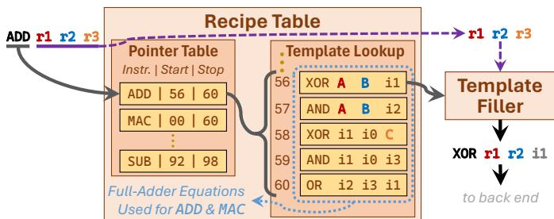
Fig. 9. Example of an optimized recipe table implementation.- 复杂控制流支持：
- 向量通道掩码 (Vector Lane Masking)：通过在每个VRF的数据路径电压供应线上增加一个mask register来实现。该寄存器的每一位控制对应通道（lane）是否接收执行操作所需的电压，从而实现硬件级的通道使能/禁用。
- 评估取指基础设施 (EFI)：位于CC与数据路径之间。当执行
JUMP_COND等控制指令时，EFI会读取mask register的内容。如果所有位均为0（即所有通道都已退出循环），则跳转不被执行；否则，程序计数器更新到跳转目标，继续执行。
数据传输控制器 (Data Transfer Controller, DTC)
DTC专门负责处理transfer ensemble和inter-MPU通信，确保数据移动的一致性和效率。
- 目标映射 (Target Map)：
- 在transfer ensemble的头部，DTC接收源RFH/VRF和目标RFH/VRF的地址对，并将其存储在目标映射中。
- 对于具有电路交换网络的PUM微架构，此阶段还可用于预先建立网络路径。
- 数据缓冲区 (Data Buffer)：
- 可选但关键的组件，用于在传输过程中暂存数据。
- 主要用途：
- 促进长距离数据传输。
- 支持复杂的数据预处理操作，如广播（broadcast）、转置（transpose）或向量移位（vector shift）。
- 作为inter-MPU消息传递的缓冲区。
- Inter-MPU控制器：
- 当遇到
SEND或RECV指令时被激活。 - 发送方流程：(1) 通过目标映射从后端请求数据；(2) 等待数据填充到数据缓冲区；(3) 将数据发送至目标MPU。
调度算法与硬件
MPU的调度器是确保安全、高效执行的关键，尤其需要处理PUM架构固有的power density（功率密度）约束。
- 热感知调度算法（见图10）：
- 调度器持续跟踪每个RF holder (RFH) 中已激活的VRF数量。
- 如果某个RFH达到其预设的最大激活VRF上限，剩余的VRF会被放入standby queue（待命队列）。
- 当当前激活的VRF完成执行后，调度器会停用它们，并从待命队列中激活下一批VRF，严格遵守RFH的硬件约束。
- 这一过程循环往复，直到整个ensemble执行完毕。
- 输入输出关系：
- 输入：MPU ISA二进制文件、硬件约束参数（如每个RFH的最大激活VRF数）。
- 输出：一系列经过调度、解码并最终在PUM后端执行的微操作序列，以及协调好的数据移动操作。
- 在整体中的作用：MPU控制路径硬件将程序员友好的、微架构无关的MPU ISA抽象，无缝地转化为针对特定PUM后端（如RACER、MIMDRAM）的高效、安全且符合物理约束的底层操作，从而实现了end-to-end application execution（端到端应用执行）的目标，并显著提升了性能和能效。
5. SIMD Gating with Lane Masking¶
SIMD Gating with Lane Masking 的实现原理
- 该机制的核心在于将传统的 SIMD (Single Instruction, Multiple Data) 执行模型与每通道（per-lane）的动态控制能力相结合，从而突破了传统向量处理器在处理数据驱动控制流（如 if-else、while 循环）时的局限性。
- 其硬件基础是为每个 VRF (Vector Register File) 引入一个专用的 mask register (掩码寄存器)。这个寄存器的每一位直接对应 VRF 中的一个 lane (通道)。
- mask register 被物理地集成到内存阵列的电压供给线上。当某一位为
1时，对应的 lane 接收执行操作所需的电压，正常参与计算；当为0时，该 lane 被电源门控（power gated），即被禁用，不参与当前指令的执行。 - 这种在内存原位（in-memory） 实现的门控机制，避免了将控制信息传回外部 CPU 或复杂控制单元的开销，实现了真正的 CPU-free execution。
算法流程与关键指令
- 分支（Branches）处理流程：
- 程序员使用
CMPxx(如CMPEQ,CMPGT) 指令对向量数据进行比较，结果（一个 per-lane 的布尔值）被存入一个特殊的 conditional register (条件寄存器)。 - 通过
SETMASK <rs>指令，可以将 conditional register 或任意通用寄存器rs中的数据加载到 mask register 中，从而激活或禁用特定的 lanes。 - 在
if分支体中，只有 mask 为1的 lanes 会执行后续指令。 - 对于
else分支，可以通过软件逻辑先保存当前 mask，然后对其取反再SETMASK，或者直接在 else 体前设置新的 mask。 UNMASK指令用于清除所有 mask 位（设为1），重新启用所有 lanes，通常用于分支结束。- 动态循环（Dynamic Loops）处理流程：
- 循环体由
JUMP_COND <lineNum>指令控制。 - 每次循环迭代后，程序会更新 mask register，将满足退出条件的 lanes 对应的 mask 位设为
0。 - 当执行
JUMP_COND时，EFI (Evaluation Fetching Infrastructure) 硬件模块会被触发。 - EFI 会从 mask register 中读取当前的掩码值，并检查是否所有位都为
0。- 如果全为
0，说明所有 lanes 都已退出循环，JUMP_COND不执行跳转，程序顺序执行下一条指令。 - 如果存在
1，说明仍有 lanes 在循环中，JUMP_COND将程序计数器（PC）跳转回循环体起始行lineNum，继续下一轮迭代。
- 如果全为
- 这种机制支持任意嵌套深度的循环和分支，因为程序员可以通过
GETMASK指令将当前 mask register 的内容读回一个通用寄存器进行保存和修改，从而管理不同嵌套层级的控制状态。
Fig. 7. ezpim code (left) and MPU ISA output (right) for (a) for/while loops, (b) branches, (c) nested branches; (d) MPU complex control support.
参数设置与硬件协同
- Mask Register 宽度：其宽度与 VRF 的 vector width 严格一致，范围从几十到数千位，以匹配底层 PUM 技术（如 DRAM, ReRAM）的并行度。
- EFI (Evaluation Fetching Infrastructure)：这是一个轻量级的硬件逻辑单元，位于 Compute Controller (CC) 和 PUM 后端之间。它的唯一功能是高效地读取 mask register 并执行“是否全零”的逻辑判断，决策延迟极低。
- Recipe Table 协同：在指令解码阶段，I2M (Instruction-to-Micro-op) decoder 会利用 recipe table 将 MPU ISA 指令（如
ADD）翻译成底层微操作序列。这个过程与 lane masking 是正交的——masking 决定了哪些 lanes 参与执行，而 I2M 决定了执行什么操作。
输入输出关系及在整体架构中的作用
- 输入：
- 数据输入：存储在 VRF 中的向量数据。
- 控制输入：由
CMPxx等指令生成的 conditional register 值，或由程序逻辑计算出的任意掩码值。 - 输出：
- 数据输出：经过 predicated execution（谓词执行）后的部分更新的向量结果。
- 控制输出：由 EFI 产生的布尔信号，用于决定
JUMP_COND是否跳转，从而驱动程序流。 - 在 MPU 整体架构中的作用：
- 赋能复杂控制流：这是 MPU 能够实现 end-to-end application execution 的关键技术。它使得 PUM 不再局限于执行简单的、无分支的内核（kernels），而是能够处理包含复杂逻辑的真实世界应用。
- 提升编程抽象：通过
ezpim等高级汇编器，程序员可以用类似高级语言的if/else和for/while语法编写代码，底层细节由 MPU 自动转换为 mask 操作和JUMP_COND指令，极大降低了编程负担。 - 维持高能效：由于控制流决策完全在内存内部完成，避免了与外部 CPU 频繁通信带来的巨大性能和能耗开销。论文图1指出，即使只有 1/80 的指令需要 CPU，也会导致 10.1× 的性能下降。SIMD gating 机制正是解决此问题的关键。
4. 实验方法与实验结果¶
实验设置
- 评估平台：研究在三种不同的 PUM (Processing-Using-Memory) 微架构上评估了 MPU (Memory Processing Unit)，分别是基于 ReRAM 的 RACER、基于 DRAM 的 MIMDRAM 和基于 SRAM 的 Duality Cache。
- 对比基线：
- Baseline：指原始的 PUM 架构，它们依赖外部 host CPU 来执行控制流等非 PUM 指令。
- GPU：使用现代高性能的 NVIDIA GeForce RTX 4090 作为通用加速器的代表进行对比。
- CPU：也与 Intel Xeon Gold 6544Y 进行了比较，但因 GPU 性能更优，论文中省略了 CPU 结果。
- 芯片面积约束：所有 PUM 架构均采用 iso-area（等面积）比较原则，即芯片总面积固定为 4 cm²。集成 MPU 前端逻辑后，会相应减少后端 PUM 阵列的数量以保持总面积不变。
- 工作负载：
- 21 个数据密集型 kernels：分为四类：基础 kernels、分支密集型 kernels、stencil kernels 和包含复杂控制流的 kernels。
- 3 个端到端应用：LLMEncode（大语言模型编码器）、BlackScholes（金融期权定价模型）和 EditDistance（基因组测序中的编辑距离算法）。
- 模拟与建模：
- 开发了名为 MASTODON 的周期精确模拟器，用于模拟 MPU 及其后端。
- MPU 关键组件在 15 nm CMOS 工艺下进行了综合，目标频率为 1 GHz。
- GPU 结果通过在真实 RTX 4090 硬件上运行高度优化的 CUDA 代码获得。
结果数据分析
- MPU 相对于 Baseline 的改进：
- 性能：MPU 在所有三种后端上均实现了显著加速。平均而言，MPU:RACER 提升 1.79×，MPU:MIMDRAM 提升 1.69×，MPU:DualityCache 提升 1.12×。
- 能效：MPU 带来了巨大的能量节省。平均而言，MPU:RACER 节省 3.23× 能量，MPU:MIMDRAM 节省 2.34×，MPU:DualityCache 节省 4.07×。
- 改进的主要来源是 消除了与 host CPU 的频繁通信开销，尤其是在处理包含复杂控制流（如动态循环、嵌套分支）的应用时，Baseline 性能急剧下降，而 MPU 能够在内存内独立完成。
- MPU 相对于 GPU 的优势：
- 性能：MPU 架构展现出压倒性优势。MPU:RACER 平均比 RTX 4090 快 67×，MPU:MIMDRAM 快 156×。
- 能效：优势更为惊人。MPU:RACER 平均节省 47× 能量，MPU:MIMDRAM 节省 35×。
- 这证明了即使是最先进的 GPU，在处理这些高度数据并行但控制流复杂的任务时，也无法匹敌专为内存内计算设计的 MPU 架构。
- 端到端应用分析：
- Baseline 的致命弱点：其性能严重依赖于计算块的大小。对于 EditDistance 这种需要频繁 CPU-PUM 交互的应用，Baseline 甚至比 GPU 慢 7.72×。
- MPU 的全面胜利：由于完全消除了片外通信，MPU 在 LLMEncode 和 EditDistance 上分别实现了最高 545× 的速度提升。
- 能效反转：Baseline 在 BlackScholes 和 EditDistance 上的能耗甚至 高于 GPU，而 MPU 则实现了 5.4× 至 14.2× 的能效提升。
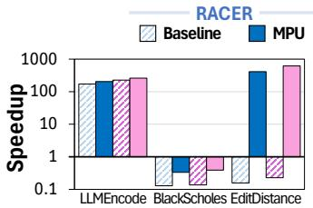
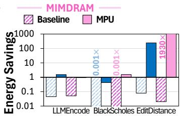
消融实验与关键洞察
- MPU 开销分析：
- MPU 前端逻辑（控制路径）的面积开销为 0.123 mm²，在 RACER 芯片上约占总面积的 13%。
- 其功耗占系统总功耗的 40.2%，主要消耗在存储单元（如 playback buffer, recipe table）上。
- 对于简单的、无控制流的 basic kernels，MPU 由于减少了后端阵列数量，会带来轻微的 3.1% 性能下降，这验证了其开销是真实存在的，但在复杂应用中被巨大收益所掩盖。
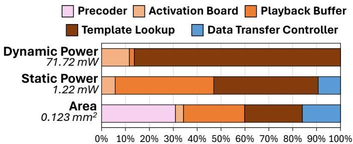
- 不同后端表现差异的原因：
- MPU:DualityCache 改进较小，原因有二：(1) 它与 CPU 集成在同一芯片上，通信开销本就较低；(2) SRAM 密度低导致片上容量有限（仅 0.2GB），大量时间花在与外部内存的数据传输上，限制了 MPU 的优势发挥。
- 控制流支持的关键作用：
- 论文通过一个简化研究（Figure 1）指出，即使只有 1/80 的指令需要 CPU，也会导致 10.1× 的整体减速。
- MPU 通过引入 lane masking、conditional register 和 JUMP_COND 等硬件/ISA 特性，成功地将控制流执行完全保留在内存内，这是其性能飞跃的根本原因。
- 编程效率提升：
- 通过高级汇编器 ezpim，端到端应用的代码量大幅减少。例如，EditDistance 的代码从 5428 行减少到 120 行，BlackScholes 从 1059 行减少到 383 行。
- 这证明了 MPU 抽象（如 ensemble, RFH）极大地简化了针对复杂 PUM 硬件的编程。